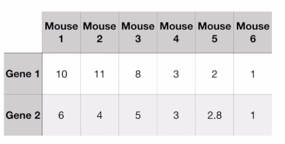
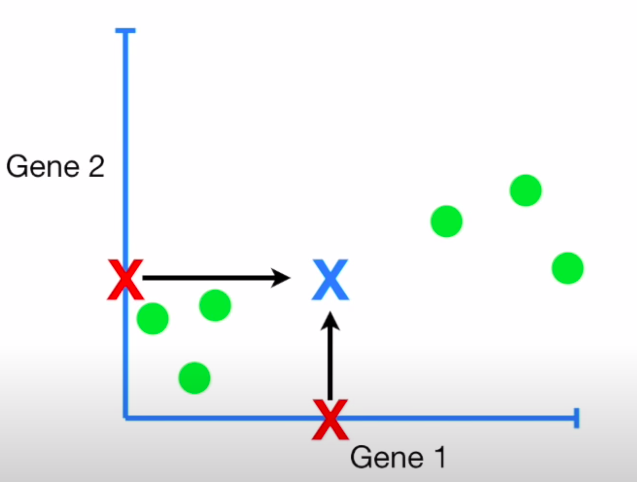
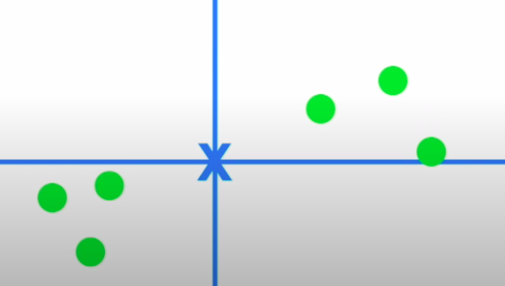
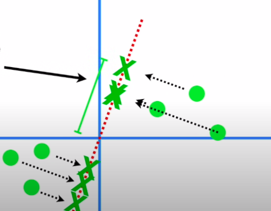
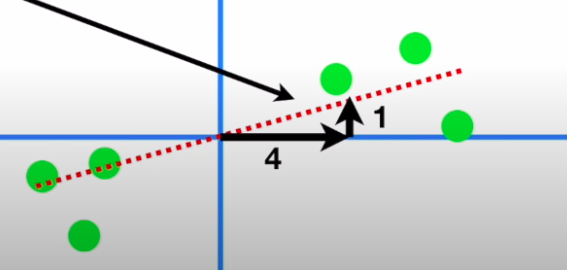
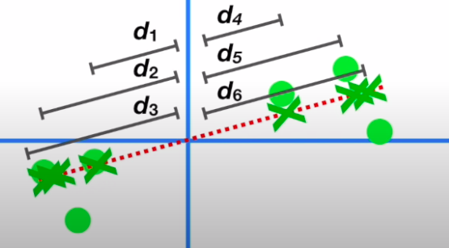
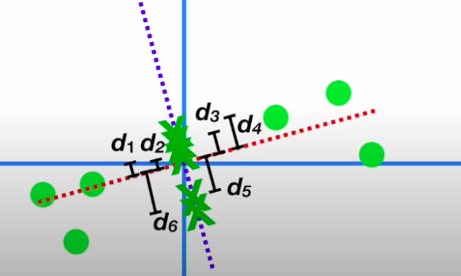
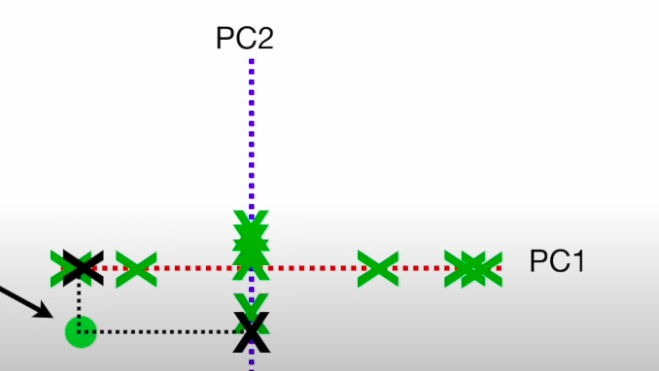
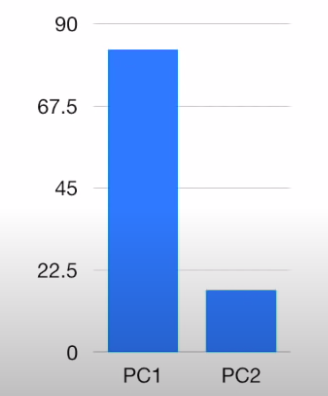

§ MALIS: PCA
The main idea is dimensionality reduction: We have data of say n dimensions, where each sample depends on all the n dimension. No we can't really visualize this data and we can't really work with storing all the data all the time since the curse of dimensionality messes us up. So, we start to analyze the importance of each dimension on each sample and try to project then according to that → This groups the samples with similar impacts from the n dimensions together and allows us to see them in clusters. Let's take the case of 2 gene, for multiple cells. We do PCA in the following steps:

- On the two axes we take the mid-point of this data:

- We now center the points around this mid-point

- We draw a random line that goes through the origin and then fit it through these points by projecting these points on to the line and then either minimizing the distances to this line or maximizing the distance of the projected points from the origin:

- The slope of this line to our original axes tells us the ratio of the importance of gene1 to gene2 i.e. if we were to make a call, we would need to mix 4 parts of gene1 and 1 part of gene2 in this case

- The unit vector along this line → the eigenvector of this data → tells us these proportions through its span components : ( 0.97, 0.242 ) → Loading scores
- The square of the distances of the projected points on the eigen vector are the eigenvalue of PC1: ∑di2=EVPC1

- Similarly, we can get another principal component to this data through the process which will be perpendicular to PC1 and it will also have its eigenvector and eigenvalue

- Now we just remove the original axes and rotate the eigen vectors to see the points throgh the EVs, and the squared sum of the projected points on each PC gives us the original point

- We can convert the EVs into variations by dividing them by the sample size , and in this case, we V1 = 15 and V2 = 3 → Thus , PC1 contributes (15+3)15=83 in importance, while PC2 contributes (15+3)3=17 in importance. These can be plotted on a scree plot , which tells us the importance of each PC

In theory, for genes there should be n components → So, even if we can't visualize them we can just see the scree plots and analyze the data and the principal components decrease in order of importance. So, we can roughly take the two most important ones and use them for understanding